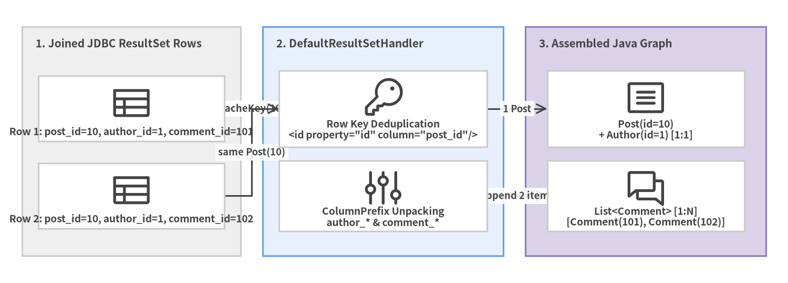
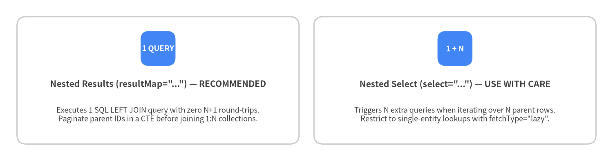

4. ResultMaps, Records & Associations
The <resultMap> element is the most powerful component in MyBatis. It transforms flat relational ResultSet rows into rich Java object graphs—including immutable Java records, 1:1 <association> references, 1:N <collection> lists, and polymorphic <discriminator> hierarchies—without writing a single line of rs.getString(...) boilerplate.
Auto-Mapping & Immutable Java record Support
For queries returning a single entity or DTO, you rarely need an explicit <resultMap>. With mapUnderscoreToCamelCase="true" and argNameBasedConstructorAutoMapping="true", DefaultResultSetHandler automatically matches SQL column labels to Java record canonical constructor parameter names or POJO setter properties:
// Immutable Java 17+ Record
public record PostSummary(
Long id,
String title,
String authorUsername,
LocalDateTime publishedAt) {}
<!-- Auto-maps id -> id, title -> title, author_username -> authorUsername, published_at -> publishedAt -->
<select id="findRecentSummaries" resultType="com.example.blog.domain.PostSummary">
SELECT
p.id,
p.title,
a.username AS author_username,
p.published_at
FROM posts p
JOIN authors a ON a.id = p.author_id
ORDER BY p.published_at DESC
LIMIT #{limit}
</select>
Explicit <constructor> Mapping
When a class has multiple constructors or when you want explicit type/column control on an immutable object, use <constructor> inside <resultMap>:
<resultMap id="authorRecordMap" type="com.example.blog.domain.Author">
<constructor>
<idArg column="author_id" javaType="java.lang.Long" name="id"/>
<arg column="username" javaType="String" name="username"/>
<arg column="email" javaType="String" name="email"/>
<arg column="created_at" javaType="java.time.LocalDateTime" name="createdAt"/>
</constructor>
</resultMap>
[!TIP] Always use
<idArg>(in<constructor>) or<id>(in property mapping) for primary key columns! MyBatis uses<id>/<idArg>columns to compute row identity keys (CacheKey) when deduplicating joined parent rows in1:N<collection>mappings.
<association> (1:1) and <collection> (1:N) Mapping
MyBatis offers two strategies for loading related entities:
- Nested Results (
resultMap="..."/ JOIN mapping): Executes a single SQLLEFT JOINquery and folds joined rows into parent/child object graphs in memory. - Nested Select (
select="..."): Executes a separate SQL query for the association (often paired withfetchType="lazy").

Source Code
from drawlib.canvas import save, setup
from drawlib.diagrams.architecture import ArchitectureDiagram, Node, NodeGroup, PhosphorIcon
from drawlib.styles import Colors, Styles
setup(width=144, height=52, dpi=150)
d = ArchitectureDiagram(
node_style=Styles.Dark,
node_text_style=Styles.DarkBold.patch(text_size=9.2),
edge_style=Styles.Dark.patch(line_width=1.5),
edge_text_style=Styles.DarkBold.patch(text_size=8.8),
node_card_style=Styles.Neutral.patch(shape_fill_color=Colors.White),
)
rs = d.add(
NodeGroup(
"1. Joined JDBC ResultSet Rows",
width=40,
height=42,
style=Styles.Neutral,
text_style=Styles.DarkBold.patch(text_size=10.0, halign="left", valign="top"),
),
xy=(4, 5),
)
n_r1 = rs.add(Node("Row 1: post_id=10, author_id=1, comment_id=101", icon=PhosphorIcon.TABLE, width=34, height=12), xy=(20, 27))
n_r2 = rs.add(Node("Row 2: post_id=10, author_id=1, comment_id=102", icon=PhosphorIcon.TABLE, width=34, height=12), xy=(20, 11))
eng = d.add(
NodeGroup(
"2. DefaultResultSetHandler",
width=44,
height=42,
style=Styles.PrimaryNeutral,
text_style=Styles.DarkBold.patch(text_size=10.0, halign="left", valign="top"),
),
xy=(48, 5),
)
n_id = eng.add(Node("Row Key Deduplication\n<id property=\"id\" column=\"post_id\"/>", icon=PhosphorIcon.KEY, width=38, height=14), xy=(22, 27))
n_prefix = eng.add(Node("ColumnPrefix Unpacking\nauthor_* & comment_*", icon=PhosphorIcon.SLIDERS, width=38, height=13), xy=(22, 11))
obj = d.add(
NodeGroup(
"3. Assembled Java Graph",
width=44,
height=42,
style=Styles.SecondaryNeutral,
text_style=Styles.DarkBold.patch(text_size=10.0, halign="left", valign="top"),
),
xy=(96, 5),
)
n_post = obj.add(Node("Post(id=10)\n+ Author(id=1) [1:1]", icon=PhosphorIcon.ARTICLE, width=36, height=14), xy=(22, 27))
n_comm = obj.add(Node("List<Comment> [1:N]\n[Comment(101), Comment(102)]", icon=PhosphorIcon.CHATS, width=36, height=13), xy=(22, 11))
n_r1.connect(n_id, label="CacheKey(10)")
n_r2.connect(n_id, label="same Post(10)")
n_id.connect(n_post, label="1 Post")
n_prefix.connect(n_comm, label="append 2 items")
d.draw(xy=(0, 0))
save()
Complete 1:1 + 1:N Nested JOIN Example (columnPrefix)
Using columnPrefix allows you to reuse clean child <resultMap> definitions across multiple queries:
<resultMap id="authorMap" type="Author">
<id property="id" column="id"/>
<result property="username" column="username"/>
<result property="email" column="email"/>
</resultMap>
<resultMap id="commentMap" type="Comment">
<id property="id" column="id"/>
<result property="body" column="body"/>
<result property="createdAt" column="created_at"/>
</resultMap>
<resultMap id="detailedPostMap" type="Post">
<id property="id" column="post_id"/>
<result property="title" column="post_title"/>
<result property="content" column="post_content"/>
<!-- 1:1 Association using columnPrefix="author_" -->
<association property="author"
resultMap="authorMap"
columnPrefix="author_"/>
<!-- 1:N Collection using columnPrefix="comment_" -->
<collection property="comments"
ofType="Comment"
resultMap="commentMap"
columnPrefix="comment_"/>
</resultMap>
<select id="findDetailedPostById" resultMap="detailedPostMap">
SELECT
p.id AS post_id,
p.title AS post_title,
p.content AS post_content,
a.id AS author_id,
a.username AS author_username,
a.email AS author_email,
c.id AS comment_id,
c.body AS comment_body,
c.created_at AS comment_created_at
FROM posts p
INNER JOIN authors a ON a.id = p.author_id
LEFT JOIN comments c ON c.post_id = p.id
WHERE p.id = #{id}
ORDER BY c.id ASC
</select>
Avoiding the N+1 Query Problem
When <association select="..."> or <collection select="..."> is used on a list query returning $N$ parent rows, MyBatis must execute 1 query for the parent list plus $N$ child queries (1 + N round-trips).

Source Code
from drawlib.canvas import save, setup
from drawlib.smartarts import CardList
from drawlib.styles import Colors, Styles
setup(width=144, height=38, dpi=150)
cards = CardList(
style=Styles.Neutral.patch(shape_fill_color=Colors.White),
text_style=Styles.DarkBold.patch(text_size=10.2),
description_style=Styles.Dark.patch(text_size=8.8),
badge_shape="rounded_rect",
badge_style=Styles.PrimaryFlat,
badge_text_style=Styles.WhiteBold.patch(text_size=9.0),
direction="horizontal",
spacing=3.5,
)
cards.add(
'Nested Results (resultMap="...") — RECOMMENDED',
"Executes 1 SQL LEFT JOIN query with zero N+1 round-trips.\nPaginate parent IDs in a CTE before joining 1:N collections.",
badge_text="1 QUERY",
)
cards.add(
'Nested Select (select="...") — USE WITH CARE',
"Triggers N extra queries when iterating over N parent rows.\nRestrict to single-entity lookups with fetchType=\"lazy\".",
badge_text="1 + N",
)
cards.draw((4.0, 4.0), width=136.0, height=30.0, align="bottom_left")
save()
Safe Pagination with 1:N <collection> Joins
Never apply LIMIT 20 OFFSET 0 directly to a SQL query that LEFT JOINs a 1:N child table (because LIMIT 20 limits joined rows, truncating child collections). Instead, paginate the parent table in a CTE or subquery first, and LEFT JOIN the child table to the 20 paginated parent rows:
<select id="findPaginatedPostsWithComments" resultMap="detailedPostMap">
WITH paged_posts AS (
SELECT id, author_id, title, content
FROM posts
ORDER BY published_at DESC
LIMIT #{limit} OFFSET #{offset}
)
SELECT
p.id AS post_id,
p.title AS post_title,
p.content AS post_content,
a.id AS author_id,
a.username AS author_username,
a.email AS author_email,
c.id AS comment_id,
c.body AS comment_body,
c.created_at AS comment_created_at
FROM paged_posts p
INNER JOIN authors a ON a.id = p.author_id
LEFT JOIN comments c ON c.post_id = p.id
ORDER BY p.post_id DESC, c.id ASC
</select>